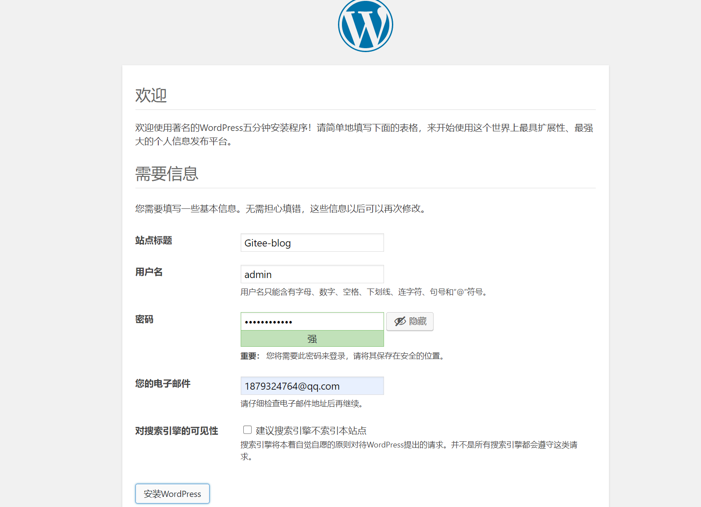
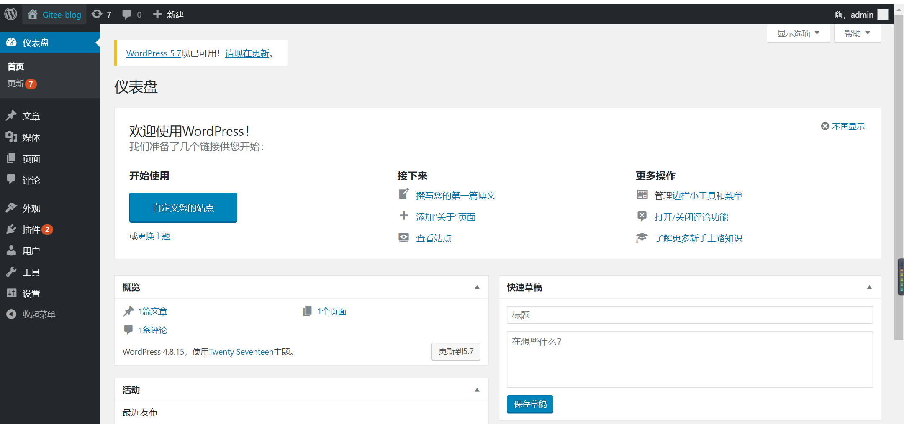

Contents
有状态项目的部署案例¶
WordPress是使用PHP语言开发的开源的个人博客平台，是一套非常完善的内容管理系统，支持非常丰富的插件和模板。
WordPress包含以下两个部分。
□ 前端应用：WordPress博客前端应用，拥有各种操作界面以供给用户访问。它使用PVC来存储博客网页等文件。
□ 数据库：MySQL数据库，用于存储该博客的内容数据。它使用PVC来存储博客内容等数据。
WordPress的整体结构与各部分之间的交互如下图：
image-20220421143248785¶
因为本例中涉及数据库，所以需要设置一个MySQL初始密码，WordPress在引用数据库时也会用到该密码。可以定义一个Secret来存储密码。
1. 创建namespace¶
[root@ci-base no_status]# kubectl create ns dev
namespace/dev created
2. 创建mysql的Secret¶
本例中将数据库初始密码设置为“abc123456”。首先，执行以下命令，对密码字符串进行base64编码。
[root@ci-base set_status]# echo -n "abc123456"|base64
YWJjMTIzNDU2
然后，创建mysql-pass.yml文件，在文件中填入以下内容并保存，其中password字段使用了刚才编码后的内容。
apiVersion: v1
kind: Secret
metadata:
name: mysql-pass
namespace: dev
type: Opaque
data:
password: YWJjMTIzNDU2
3. 创建mysql-deployment¶
接下来，部署WordPress将会用到的MySQL数据库。创建mysql-deployment.yml文件，在文件中填入以下内容并保存。
apiVersion: v1
kind: Service
metadata:
name: wordpress-mysql
labels:
app: wordpress
namespace: dev
spec:
ports:
- port: 3306
selector:
app: wordpress
tier: mysql
clusterIP: None
---
apiVersion: v1
kind: PersistentVolumeClaim
metadata:
name: mysql-pv-claim
labels:
app: wordpress
namespace: dev
spec:
accessModes:
- ReadWriteOnce
storageClassName: "managed-nfs-storage"
resources:
requests:
storage: 10Gi
---
apiVersion: apps/v1 # for k8s versions before 1.9.0 use apps/v1beta2 and before 1.8.0 use extensions/v1beta1
kind: Deployment
metadata:
name: wordpress-mysql
labels:
app: wordpress
namespace: dev
spec:
selector:
matchLabels:
app: wordpress
tier: mysql
strategy:
type: Recreate
template:
metadata:
labels:
app: wordpress
tier: mysql
spec:
containers:
- image: mysql:5.6
name: mysql
env:
- name: MYSQL_ROOT_PASSWORD
valueFrom:
secretKeyRef:
name: mysql-pass
key: password
livenessProbe:
tcpSocket:
port: 3306
ports:
- containerPort: 3306
name: mysql
volumeMounts:
- name: mysql-persistent-storage
mountPath: /var/lib/mysql
volumes:
- name: mysql-persistent-storage
persistentVolumeClaim:
claimName: mysql-pv-claim
这个模板包含4个部分。首先，定义一个无头Service，用于提供MySQL服务。
然后，定义一个10GiB的PVC以供MySQL存放数据库文件，这里使用了managed-nfs-storage的StorageClass，以便自动为PVC创建PV。
接下来，定义单实例的Deployment控制器，其镜像为mysql，该实例引用了刚才创建的Secret，以便初始化数据库密码。最后，引用模板中定义的PVC，映射路径为/var/lib/mysql以存放数据库文件。
应用模板后，MySQL实例的状态如下所示
[root@ci-base set_status]# ll
total 12
drwxr-xr-x 17 root root 4096 Apr 8 15:00 external-storage
-rw-r--r-- 1 root root 119 Apr 8 14:55 mysql-pass.yml
-rw-r--r-- 1 root root 1501 Apr 8 15:35 wordpress-mysql.yml
[root@ci-base set_status]# kubectl apply -f .
[root@ci-base set_status]# kubectl get deployment,pod,pvc,svc -n dev
NAME READY UP-TO-DATE AVAILABLE AGE
deployment.apps/wordpress-mysql 1/1 1 1 2m34s
NAME READY STATUS RESTARTS AGE
pod/wordpress-mysql-5f4b68ff8f-tsk2l 1/1 Running 0 2m34s
NAME STATUS VOLUME CAPACITY ACCESS MODES STORAGECLASS AGE
persistentvolumeclaim/mysql-pv-claim Bound pvc-e310bfc0-62a9-4b52-a94f-366ad7868f41 10Gi RWO managed-nfs-storage 2m34s
NAME TYPE CLUSTER-IP EXTERNAL-IP PORT(S) AGE
service/wordpress-mysql ClusterIP None <none> 3306/TCP 2m34s
4. 创建wordpress-deployment¶
接下来，部署WordPress前端应用程序。该应用程序会引用之前创建的MySQL数据库，为用户提供博客管理功能。为了创建wordpress-deployment.yml文件，在文件中填入以下内容并保存。
apiVersion: v1
kind: Service
metadata:
name: wordpress
labels:
app: wordpress
namespace: dev
spec:
ports:
- port: 80
nodePort: 30111
selector:
app: wordpress
tier: frontend
type: NodePort
---
apiVersion: v1
kind: PersistentVolumeClaim
metadata:
name: wp-pv-claim
labels:
app: wordpress
namespace: dev
spec:
storageClassName: "managed-nfs-storage"
accessModes:
- ReadWriteOnce
resources:
requests:
storage: 2Gi
---
apiVersion: apps/v1 # for k8s versions before 1.9.0 use apps/v1beta2 and before 1.8.0 use extensions/v1beta1
kind: Deployment
metadata:
name: wordpress
labels:
app: wordpress
namespace: dev
spec:
selector:
matchLabels:
app: wordpress
tier: frontend
strategy:
type: Recreate
template:
metadata:
labels:
app: wordpress
tier: frontend
spec:
containers:
- image: wordpress:4.8-apache
name: wordpress
env:
- name: WORDPRESS_DB_HOST
value: wordpress-mysql
- name: WORDPRESS_DB_PASSWORD
valueFrom:
secretKeyRef:
name: mysql-pass
key: password
ports:
- containerPort: 80
name: wordpress
volumeMounts:
- name: wordpress-persistent-storage
mountPath: /var/www/html
volumes:
- name: wordpress-persistent-storage
persistentVolumeClaim:
claimName: wp-pv-claim
这个模板包含3个部分。首先，定义的NodePort类型的Service将WordPress入口提供给各个集群主机的30111端口，这样在浏览器地址栏中输入http://{主机IP}:30111就可以访问留言板页面了。
然后，定义一个2GiB的PVC用于供WordPress存放博客、网页等文件，这里使用了前几章定义的StorageClass，以便自动为PVC创建PV。
最后，定义单实例的Deployment，其镜像为wordpress，该实例通过WORDPRESS_DB_HOST环境变量引用刚才定义的MySQL服务的名称。接下来，该实例通过WORDPRESS_DB_PASSWORD环境变量引用数据库密码，以便WordPress服务访问数据库，并引用模板中定义的PVC（映射路径为/var/www/html），以存放网页等文件。
应用模板后，WordPress实例的状态如下所示
[root@ci-base set_status]# kubectl apply -f .
[root@ci-base set_status]# kubectl get deployment,pod,pvc,svc -n dev
NAME READY UP-TO-DATE AVAILABLE AGE
deployment.apps/wordpress 1/1 1 1 104s
deployment.apps/wordpress-mysql 1/1 1 1 105s
NAME READY STATUS RESTARTS AGE
pod/wordpress-6857459697-5ndgd 1/1 Running 0 104s
pod/wordpress-mysql-5f4b68ff8f-c7zdj 1/1 Running 0 105s
NAME STATUS VOLUME CAPACITY ACCESS MODES STORAGECLASS AGE
persistentvolumeclaim/mysql-pv-claim Bound pvc-83a89cc1-3cdb-4268-856e-68264e9b03de 10Gi RWO managed-nfs-storage 105s
persistentvolumeclaim/wp-pv-claim Bound pvc-cfa237f8-fdbd-4932-b8c9-1ce6b5dca3ae 2Gi RWO managed-nfs-storage 105s
NAME TYPE CLUSTER-IP EXTERNAL-IP PORT(S) AGE
service/wordpress NodePort 10.107.67.69 <none> 80:30111/TCP 105s
service/wordpress-mysql ClusterIP None <none> 3306/TCP 105s
5. 验证测试¶
接下来，就可以在URL中输入地址访问WordPress应用了，在本例中地址为http://192.168.1.xxx:30111。之后会进入初始界面，如图11-13所示，选择“简体中文”，然后单击“继续”按钮。
接着，设置初始账号和密码，并使用它们进行登录。之后，就会进入WordPress操作界面
